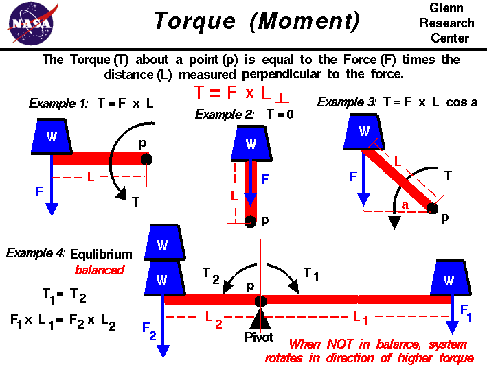

|

A force may be thought of as a push or
pull in a specific direction. When a force is applied to an object,
the resulting motion of the object depends on where the
force is applied and how the object is confined.
If the object is unconfined and the force is applied through the
center of gravity,
the object moves in pure
translation,
as described by Newton's
laws of motion.
If the object is confined (or pinned) at some location called a
pivot, the object
rotates
about the pivot, but does not translate.
The force is transmitted through the pivot
and the details of the rotation depend on the distance from
the applied force to the pivot.
If the object is unconfined and the force is applied at some
distance from the center of gravity, the object both translates
and rotates about the center of gravity.
The details of the rotation depend on the distance from the
applied force to the center of gravity.
The motion of flying objects is
described
by this third type of motion; a combination of translation and rotation.
A force F is a
vector quantity,
which means that it has both a magnitude and
a direction associated with it. The
direction of the force
is important because the resulting motion of the object
is in the same direction as the force.
The product of the force and the perpendicular distance to the
center of gravity for an unconfined object,
or to the pivot for a confined object, is^M
called the torque or the moment.
A torque is also a vector quantity and produces a rotation
in the same way that a force produces a translation. Namely, an object at
rest, or rotating at a constant angular velocity, will continue to do so
until it is subject to an external torque. A torque produces a change
in angular velocity which is called an angular acceleration.
The distance L used to determine the torque T is the distance from the
pivot p to the force, but measured perpendicular to the
direction of the force.
On the figure, we show four examples of torques to illustrate the basic
principles governing torques.
In each example a blue weight W is acting on a red bar, which is called
an arm.
In Example 1, the force (weight) is applied perpendicular
to the arm. In this case, the perpendicular distance is the length of the
bar and the torque is equal to the product of the length and the force.
T = F * L
In Example 2, the same force is applied to the arm,
but the force now acts right through the
pivot. In this case, the distance from the pivot perpendicular to the force
is zero. So, in this case, the torque is also zero.
Think of a hinged door. If you push on
the edge of the door, towards the hinge, the door doesn't move
because the torque is zero.
Example 3 is the general case in which the force is applied
at some angle a to
the arm. The perpendicular distance is given by
trigonometry
as the length of the arm (L) times the
cosine (cos)
of the angle.
The torque is then given by:
T = F * L * cos(a)
Examples 1 and 2 can be derived from this general formula,
since the
cosine of
0 degrees is 1.0 (Example 1), and the cosine of 90 degrees is 0.0 (Example 2).
In Example 4, the pivot has been moved from the end of the bar to
a location near the middle of the bar. Weights are added to both sides
of the pivot.
To the right a single weight W produces a force F1 acting
at a distance L1 from the pivot. This creates a torque T1 equal to the
product of the force and the distance.
T1 = F1 * L1
To the left of the
pivot two weights W produce a force F2 at a distance L2.
This produces
a torque T2 in a direction opposite from T1 because the distance
is in the opposite direction.
T2 = F2 * L2
If the system were in equilibrium,
or balanced, the torques would be equal and no net torque would act on the system.
T1 = T2 or T1 - T2 = 0
F1 * L1 = F2 * L2
If the system is not in equilibrium, or unbalanced, the bar rotates
about the pivot in the direction of the higher torque.
If F2 = 2 * F1,
what is the relation between L1 and L2 to balance the system? If F2 = 2 * F1,
and L1 = L2, in which direction would the system rotate?
Aeronautical engineers use the torque generated by aerodynamic surfaces
to stabilize and control aircraft.
On airplanes, the control surfaces produce
aerodynamic forces.
These forces are applied at some distance from the
aircraft cg
and therefore
cause the aircraft to rotate. The
elevators produce a
pitching moment, the
rudder produce a
yawing moment, and the
ailerons produce a
rolling moment. The ability to vary the amount of
the force and the moment allows the pilot to maneuver or to
trim the aircraft.
On model rockets, the
fins
are used to generate a torque about the rocket
center of gravity
to provide
stability
during powered flight.
On kites, the aerodynamic and weight forces
produce a torque about the
bridle point.
The distance from the bridle point and the magnitude of the
forces has a strong effect on the
performance
of the kite.
Activities:


Guided Tours
-
 Forces, Torques and Motion:
Forces, Torques and Motion:

-
Basic Aircraft Motion:

-
Aircraft Roll Motion:
-
Aircraft Pitch Motion:
-
Aircraft Yaw Motion:
-
Ailerons:
-
Spoilers:
-
Elevators:
-
Stabilators:
-
Rudder:
-
Stability of a Model Rocket:
Navigation..


- Beginner's Guide Home Page
|